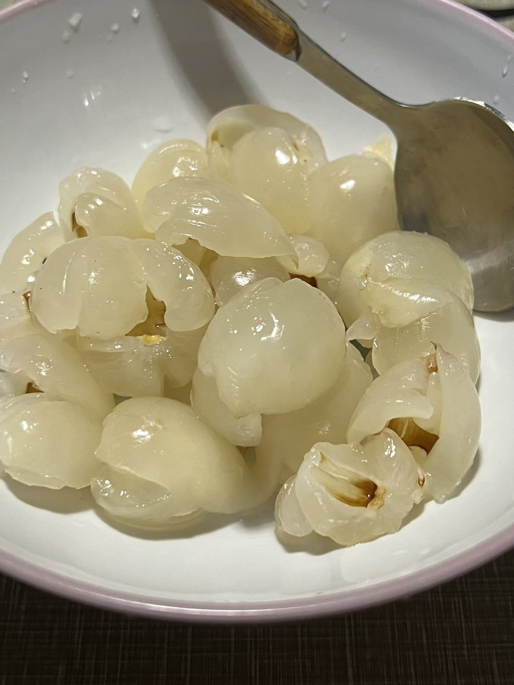
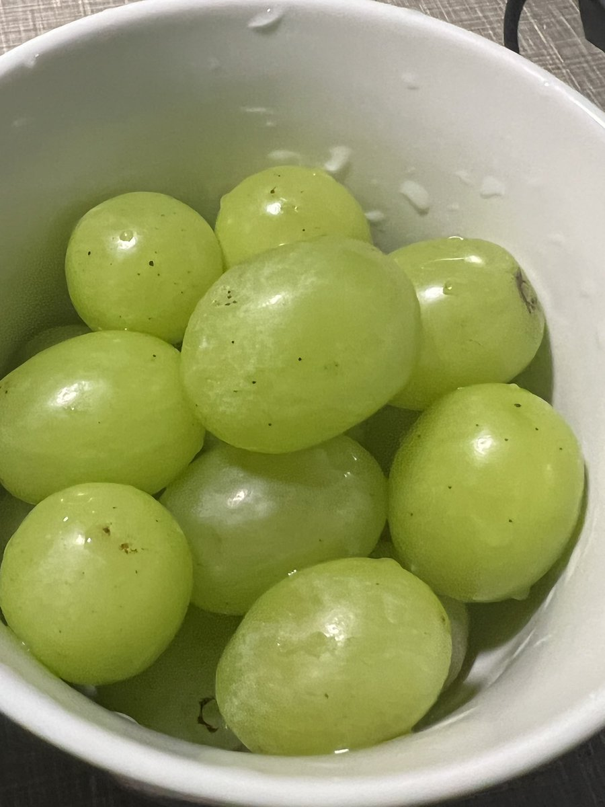
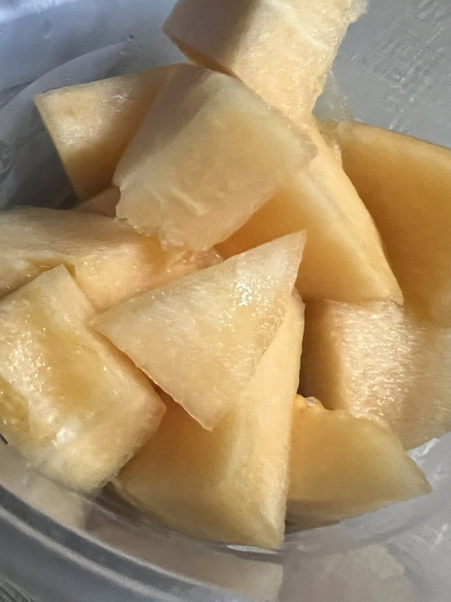

泉方
@ci_shang85157
@avaou78011 我靠，我以为麻酱火鸡面是我自己发明出来的，又香又辣的



ava
@avaou78011
跟你们说吧，火鸡面超级好吃的，尤其是我自己煮的火鸡面，不仅不辣到死，而且美味至极。喜欢吃麻酱的人有福了。火鸡面煮好蒸发了水分之后再放麻酱，超级好吃😋！！！生活就是这么美滋滋！！！（本人一直认为原味火鸡面才是天花板）毋庸置疑不可否定！！！我说是就是 https://t.co/DoUcqfSw7T